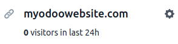
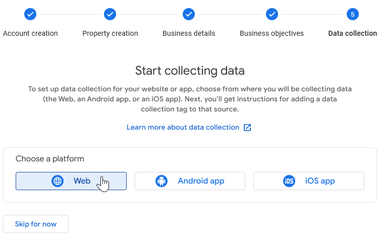

Website analytics¶
Website analytics helps website owners monitor how people use their site. It provides data on visitor demographics, behavior, and interactions, helping improve websites and marketing strategies.
You can track your Odoo website’s traffic using Plausible.io or Google Analytics. We recommend using Plausible.io as it is privacy-friendly, lightweight, and easy to use.
The Plausible analytics dashboard is also integrated into Odoo and can be accessed via .
Plausible.io¶
Odoo hosts its own Plausible.io server and provides a free and ready-to-work Plausible.io solution for Odoo Online databases. Odoo automatically creates and sets up your account. You can start using it by going to .
Note
If you already have a Plausible.io account and you want to connect it to your Odoo Online
database, you must create two ir.config.parameters to use Plausible.io’s servers. To do so,
enable the developer mode and go to . Click New and fill in the following Key
and Value fields:
Key |
Value |
|---|---|
|
|
|
|
Then, follow the steps below to connect your existing account with Plausible.io servers.
If your database is hosted on Odoo.sh or On-premise, or if you wish to use your own Plausible.io account, proceed as follows:
Create or sign in to a Plausible account using the following link: https://plausible.io/register.
If you are creating a new account, go through the registration and activation steps. When asked to provide your website details, add its Domain without including
www(e.g.,example.odoo.com) and change the Reporting Timezone if necessary. Click Add snippet to proceed to the next step. Ignore the Add JavaScript snippet instructions and click Start collecting data.Once done, click the Plausible logo in the upper-left part of the page to access your list of websites, then click the gear icon next to the website.
In the sidebar, select Visibility, then click + New link.
Enter a Name, leave the Password field empty, as the Plausible analytics dashboard integration in Odoo doesn’t support it, then click Create shared link.

Copy the shared link.

In Odoo, go to .
In the SEO section, enable Plausible Analytics, then paste the Shared Link and click Save.
Tip
If you have multiple websites, add your websites to your Plausible.io account by going to https://plausible.io/sites and clicking + Add website. In Odoo, in the Website settings, make sure to select the website in the Settings of Website field before pasting the Shared link.
Note
Odoo automatically pushes two custom goals: Lead Generation and Shop.
Google Analytics¶
To follow your Odoo website’s traffic with Google Analytics:
Create or sign in to a Google account using the following link: https://analytics.google.com.
If you are setting up Google Analytics for the first time, click Start measuring and go through the account creation step.
If you already have a Google Analytics account, sign in and click the gear icon in the bottom-left corner of the page to access the Admin page. Then, click + Create Property.

Complete the next steps: property creation, business details, and business objectives.
When you reach the Data collection step, choose the Web platform.
Set up your data stream: Specify your Website URL and a Stream name, then click Create stream.
Copy the Measurement ID.
In Odoo, go to .
In the SEO section, enable Google Analytics, then paste the Measurement ID and click Save.
Tip
If you have multiple websites with separate domains, it is recommended to create one property per domain. In Odoo, in the Website settings, make sure to select the website in the Settings of Website field before pasting the Measurement ID.
Google Tag Manager¶
GTM is a tag management system that allows you to easily update measurement codes and related code fragments, collectively known as tags on your website or mobile app, directly through the code injector.
Warning
Google Tag Manager may not be compliant with local data protection regulations.
To use GTM, proceed as follows:
Create or sign in to a Google account by going to https://tagmanager.google.com/.
In the Accounts tab, click Create account.
Enter an Account Name and select the account’s Country.
Enter your website’s URL in the Container name field and select the Target platform.
Click Create and agree to the Terms of Service.
Copy the
<head>and<body>codes from the popup window. Then, go to your website, click Edit, go to the Themes tab, scroll down to the Website Settings section, then click <head> and </body> to paste the codes.
Note
The data is collected in the marketing tools used to monitor the website (e.g., Google Analytics, Plausible, Facebook Pixel), not in Odoo.